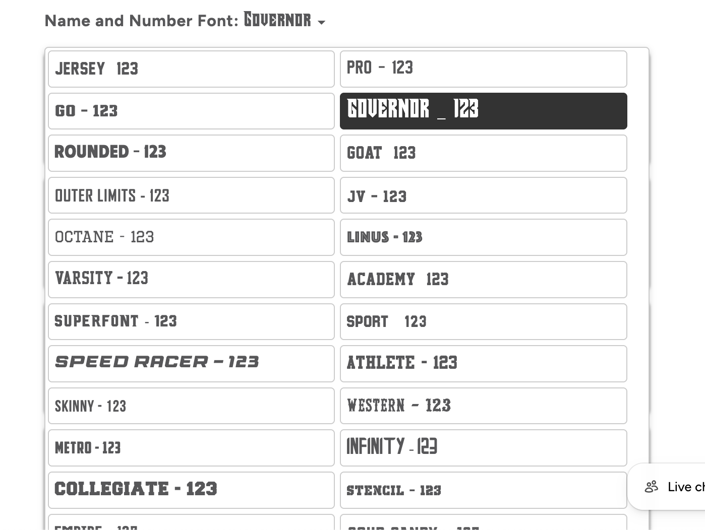

Fyrehocky


// overview
Fyrehockey needed a fully custom product configurator for theirteam hockey jerseys — one that let customers choose colors, pick logoplacement, personalize names and numbers, and preview fonts before ordering,replacing the need for two separate paid Shopify apps.
// challenge
The client's existing setup couldn't handle the complexity ofteam-sports customization: independent per-player name/number fields(not a comma-separated mess), toggleable logo placement (front, shoulder,back sponsor), color swatches that actually reflected the product images,and live font previews from their own custom TTF files. Off-the-shelfvariant/app solutions weren't built for this level of interdependent logic.
// solution
Built a fully custom Liquid + JS product template with interlinked optionlogic — color swatches synced to real product images, toggleablelogo-placement fields, roster upload support, and individual name/numberinput cells instead of a single comma-separated field. Added a customfont-preview system using the client's own TTF files, rendering live uppercasesamples with numerals for each font. Later extended the same core template intothree additional variants (jersey, simplified product, pant) by reusing theunderlying logic while adjusting the option sets per product type, and fixed amobile Safari bug where uploaded logos were silently dropped before checkout.